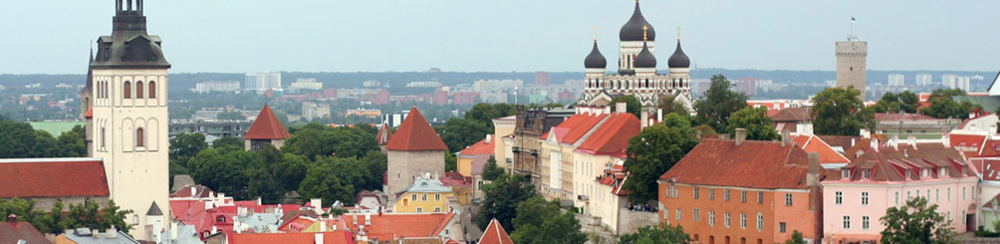
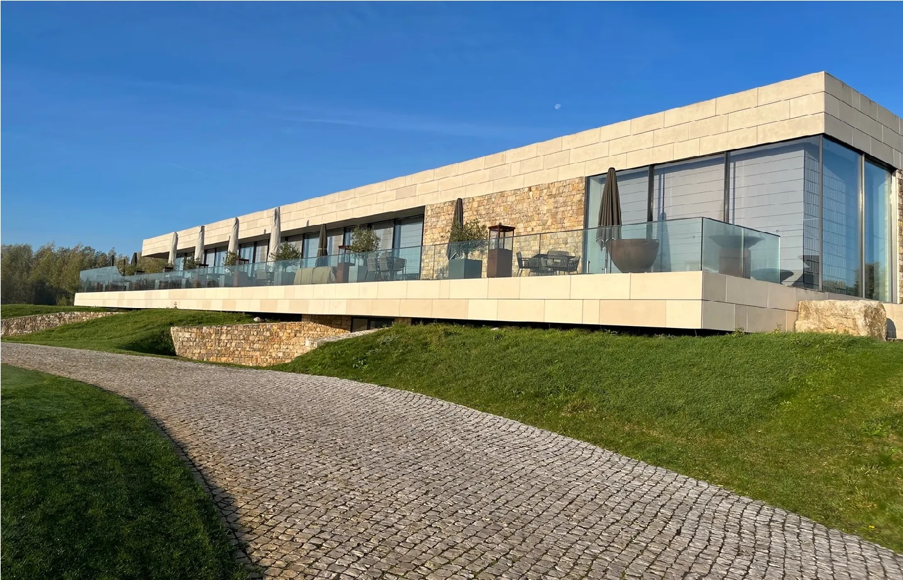

Day 1: Saturday - Depart
This evening depart from your country.

This evening depart from your country.
Your Epicurean Golf Tour begins in Milan. On arrival at Milan Airport you will be transfer to your transportation. The drive to Lake Como will take approximately 90 minutes. Check-in at Villa d'Este begins at 2PM. A private guided tour of Como begins late afternoon and ends in a local restaurant.
Overnight: Villa d'Este (Superior Courtyard Room) or Terminus (Superior room).
Today play La Pinetina. Founded in 1971, La Pinetina Golf Club covers 158 acres of Tradate-Appiano Gentile parkland in wonderfully unspoilt countryside. In 1982 the entire complex was purchased by the members and considerable structural and technical modernization has been carried out to bring the course to a high standard of perfection. Enjoy the wonderful panoramic views characterized by the presence of water hazards and well-kept, quick greens.
Cooking Class / Wine Tasting #1: This evening you will take your first cooking class at the nearby Culinary Institute of Como where you will be welcomed by the chefs and interpreter. In Class 1, you will learn to prepare: Egg Pasta, Bolognaise Ragout, Bechamel for Lasagne, Chicken crepinette with savoy, Short Pastry, Apple Strudel. A professional Sommelier will conduct a wine tasting with dinner.
The Culinary Institute of Como represents one of the best culinary schools in Italy preparing future chefs during a 5-year course. Attended by more than 400 students, the school has 4 cooking laboratories and 3 restaurants.
Today play Monticello - Red Course. Designed by Raffaele Buratti, later modified and improved by Jim Fazio, Monticello has hosted seven Italian Open championships. The setting is wonderful, with the Alps as a backdrop the 7,041 yard layout features wide, flat fairways lined by trees and strategically placed bunkers. The difficulties are clearly in view and judiciously spread in order to avoid overwhelming the average player.
Cooking Class / Wine Tasting #2: This evening at the Culinary Institute you will learn to prepare: Potato dumplings, Tomato & Basil sauce, Pesto Sauce, Milanese style escalope, Tiramisu. A professional Sommelier will conduct a wine tasting with dinner.
Today explore Milan for its culture and its shopping with the assistance of your private guide.
Today you will play Golf Club Menaggio and visit Villa Carlotta and Bellagio. Menaggio is set in the hills beside Lake Como with magnificent views overlooking the water plus the Alps for a backdrop. It's a short layout, barely 6,000 yards, but what this par 70 lacks in length it makes up for with terrain requiring precise play to narrow fairways and steep inclines. Be sure to visit the library considered the most precious concentration of golf publications in the world.
After golf, visit Villa Carlotta where your guide will be waiting to present this 17th century masterpiece and the beautiful gardens which adorn the property. After Villa Carlotta, you and your guide will take the ferry for a 10 minute crossing of the lake to Bellagio. Here you'll stroll the charming narrow streets of this enchanting village called "the pearl of the lake". Bellagio is situated at the tip of the peninsula separating the lake's two southern arms, with the Alps visible across the lake to the north. Return by ferry to Villa Carlotta and drive back to the hotel by late afternoon.
Today play Golf Club Carimate which lies in the heart of Brianza, half way between Como and Milan. The club is situated on the estate surrounding a large medieval castle. It's a 6,435 yard par 71 founded in 1961 that plays through huge rhododendron bushes alternated with age-old majestic oaks. A major modernization was completed in 2007 which solidified the clubs standing as one of the best in the area.
Cooking Class / Wine Tasting #3: This evening at the Culinary Institute you will learn to prepare: Milanese style risotto, Risotto with mushrooms, Valdostana style escalope, Caponata, Paradise Cake. A professional Sommelier will conduct a wine tasting with dinner.
Today play Golf Club Villa d'Este. The course lies beyond the wonderful lake of Montorfano in a splendid setting in the sunny Brianza. Designed in 1926 by Peter Gannon, Villa d'Este is one of Italy's golf gems. The course winds its way wind through chestnut groves, birch and pine woods. It is considered one of the most varied and challenging par 69 course. A superb club-house adds the final touch to this tranquil and elegant site.
After golf, the rest of the day is free for last chance shopping in downtown Como. The farewell dinner will be served at Ristorante Acquadolce, one of the most beautiful restaurants on the lake.
Check-out.

